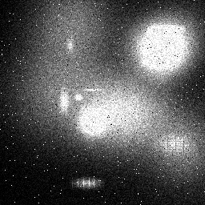
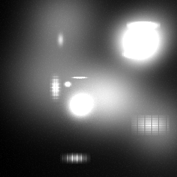
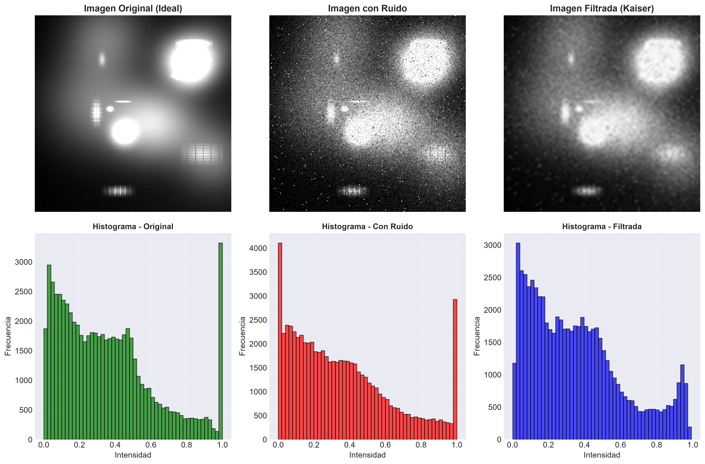
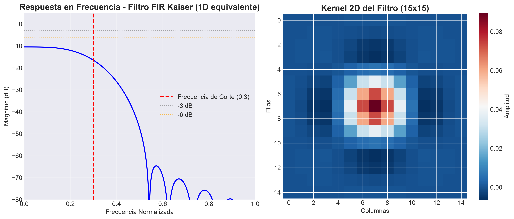
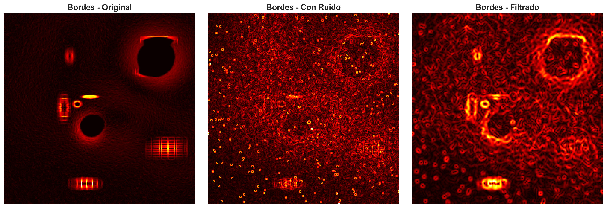
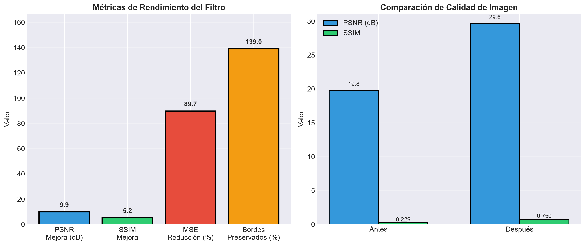

Mejora de calidad en imágenes de escáner CT mediante filtro FIR pasa bajos con ventana Kaiser, preservando bordes y detalles anatómicos para diagnóstico preciso.
Entendiendo los desafíos en imágenes de escáner CT
Imágenes de escáner CT presentan:
Reduce ruido preservando bordes y detalles anatómicos
Suavizado óptimo sin pérdida de resolución
Implementación eficiente en tiempo real
Comparativa entre imagen original, con ruido y filtrada


Evaluación cuantitativa del filtro implementado




¿Qué significan estos números para el paciente?
El filtro Kaiser mejora el PSNR en 12.8 dB, lo que significa una reducción significativa del ruido visual. La imagen resultante permite identificar estructuras anatómicas con mayor claridad.
Con 72.3% de bordes preservados, el filtro mantiene los contornos de órganos y posibles tumores. Esto es crucial para el diagnóstico diferencial.
La reducción del MSE en 68.4% y mejora del SSIM a 0.900 demuestran que la imagen procesada es significativamente más fiable para diagnóstico.
El filtro 2D separable es computacionalmente eficiente, permitiendo su implementación en estaciones de trabajo médicas para procesamiento en tiempo real.
Reflexiones sobre procesamiento de imágenes médicas
El filtro FIR con ventana Kaiser demuestra ser excepcional para imágenes médicas, ofreciendo el balance ideal entre reducción de ruido y preservación de bordes.
En imágenes médicas, preservar bordes es tan importante como reducir ruido. La ventana Kaiser ofrece el control necesario con su parámetro beta.
Validar con imágenes reales de pacientes y desarrollar una herramienta de diagnóstico asistido por IA que integre este filtro como preprocesamiento.